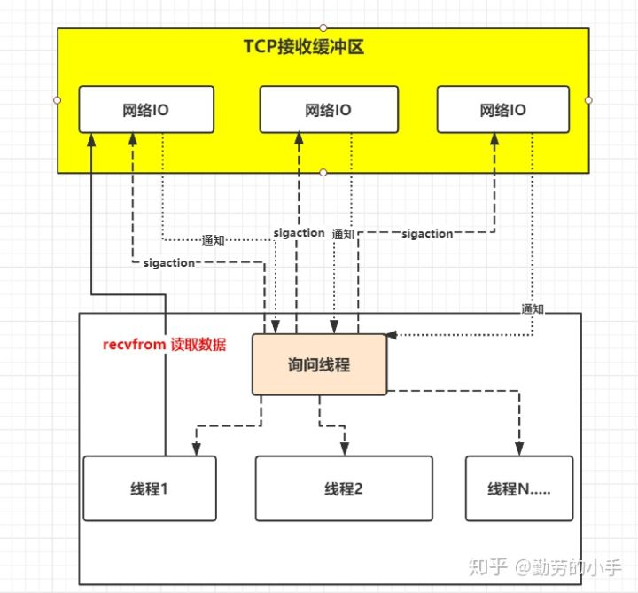

[TOC]
Netty 学习
虽然说netty，用的少但是感觉比较流行，值得研究！！！
Netty 是一个 NIO 客户端-服务器框架，可以快速轻松地开发网络应用程序，它极大地简化了网络编程，比如TCP和UDP 套接字服务器。

那么什么是NIO？或者说什么是IO？
IO
I/O（Input/Output），即输入／输出，通常指数据在存储器（内部和外部）或其他周边设备之间的输入和输出。
那么什么是存储器或者说是内存呢？
复习一下计算机组成原理
冯诺依曼结构
执行过程：
-
通过输入设备到存储器
-
控制器读取程序计数器获得指令内存地址，通过操作地址总线从内存地址拿到数据。
-
控制器分析指令寄存器中的指令，分析完后送到存储器
-
存储器将数据送到运算器，运算器完成计算
-
自增后开始顺序执行下一条指令，不断循环执行直到程序结束。
-
输出到输出设备
现代计算机机构
I/O 其实就是 input 和 output 的缩写，即输入/输出。比如我们用键盘来敲代码其实就是输入，那显示器显示图案就是输出，这其实就是 I/O。
-
磁盘 I/O 指的是硬盘和内存之间的输入输出。读取本地文件的时候，要将磁盘的数据拷贝到内存中，修改本地文件的时候，需要把修改后的数据拷贝到磁盘中。
-
网络 I/O 指的是网卡与内存之间的输入输出。当网络上的数据到来时，网卡需要将数据拷贝到内存中。当要发送数据给网络上的其他人时，需要将数据从内存拷贝到网卡里。
那为什么都要跟内存交互呢?
我们的指令最终是由 CPU 执行的，究其原因是 CPU 与内存交互的速度远高于 CPU 和这些外部设备直接交互的速度。
因此都是和内存交互，当然假设没有内存，让 CPU 直接和外部设备交互，那也算 I/O。
总结下：I/O 就是指内存与外部设备之间的交互（数据拷贝）。
用户态和内核态
对 32 位操作系统而言，它的寻址空间（虚拟地址空间，或叫线性地址空间）为 4G（2的32次方）。也就是说一个进程的最大地址空间为 4G。操作系统的核心是内核(kernel)，它独立于普通的应用程序，可以访问受保护的内存空间，也有访问底层硬件设备的所有权限。为了保证内核的安全，现在的操作系统一般都强制用户进程不能直接操作内核。具体的实现方式基本都是由操作系统将虚拟地址空间划分为两部分，一部分为内核空间，另一部分为用户空间。
寻址空间一般指的是CPU对于内存寻址的能力。通俗地说，就是能最多用到多少内存的一个问题。数据在存储器(RAM)中存放是有规律的 ，CPU在运算的时候需要把数据提取出来就需要知道数据存放在哪里 ，这时候就需要挨家挨户的找，这就叫做寻址，但如果地址太多超出了CPU的能力范围，CPU就无法找到数据了。 CPU最大能查找多大范围的地址叫做寻址能力 ，CPU的寻址能力以字节为单位 ，如32位寻址的CPU可以寻址2的32次方大小的地址也就是4G，这也是为什么32位的CPU最大能搭配4G内存的原因 ，再多的话CPU就找不到了。

在说用户态与内核态之前，有必要说一下 C P U 指令集，指令集是 C P U 实现软件指挥硬件执行的媒介，具体来说每一条汇编语句都对应了一条 C P U 指令，同时 C P U 指令集 有权限分级，大家试想，C P U 指令集 可以直接操作硬件的，要是因为指令操作的不规范`，造成的错误会影响整个计算机系统的。好比你写程序，因为对硬件操作不熟悉，导致操作系统内核、及其他所有正在运行的程序，都可能会因为操作失误而受到不可挽回的错误，最后只能重启计算机才行。Intel的X86架构的CPU提供了0到3四个特权级，其中 ring 0 权限最高，可以使用所有 C P U 指令集，ring 3 权限最低，仅能使用常规 C P U 指令集，不能使用操作硬件资源的 C P U 指令集，比如 I O 读写、网卡访问、申请内存都不行，Linux系统仅采用ring 0 和 ring 3 这2个权限。
分别对应的就是内核态(Kernel Mode)与用户态(User Mode)。
- 内核态：进程运行在内核空间中，此时 CPU 可以执行任何指令。运行的代码也不受任何的限制，可以自由地访问任何有效地址，也可以直接进行端口的访问
- 用户态：进程运行在用户空间中，被执行的代码要受到 CPU 的诸多检查，它们只能访问映射其地址空间的页表项中规定的在用户态下可访问页面的虚拟地址，且只能对任务状态段(TSS)中 I/O 许可位图(I/O Permission Bitmap)中规定的可访问端口进行直接访问。
Kernel 运行在超级权限模式（Supervisor Mode）下，所以拥有很高的权限。按照权限管理的原则，多数应用程序应该运行在最小权限下。因此，很多操作系统，将内存分成了两个区域：
-
内核空间（Kernal Space），这个空间只有内核程序可以访问；
-
用户空间（User Space），这部分内存专门给应用程序使用。
内核态和用户态的切换
从用户态到内核态切换可以通过三种方式：
- 系统调用，用户态进程主动要求切换到内核态的一种方式，用户态进程通过系统调用申请使用操作系统提供的服务程序完成工作
- 异常：如果当前进程运行在用户态，如果这个时候发生了异常事件，就会触发切换。例如：缺页异常。
- 外设中断：当外设完成用户的请求时，会向CPU发送中断信号。

如上图所示：内核程序执行在内核态（Kernal Mode），用户程序执行在用户态（User Mode）。当发生系统调用时，用户态的程序发起系统调用。因为系统调用中牵扯特权指令，用户态程序权限不足，因此会中断执行，也就是 Trap（Trap 是一种中断）。
发生中断后，当前 CPU 执行的程序会中断，跳转到中断处理程序。内核程序开始执行，也就是开始处理系统调用。内核处理完成后，主动触发 Trap，这样会再次发生中断，切换回用户态工作。
根据UNIX网络编程对I/O模型的分类，UNIX提供了5种I/O模型，阻塞I/O模型、非阻塞I/O模型、I/O复用模型、信号驱动I/O模型、异步I/O
要深入的理解各种IO模型，那么必须先了解下产生各种IO的原因是什么，要知道这其中的本质问题那么我们就必须要知一条消息是如何从过一个人发送到另外一个人的；
以两个应用程序通讯为例，我们来了解一下当“A”向"B" 发送一条消息，简单来说会经过如下流程：
第一步：应用A把消息发送到 TCP发送缓冲区。
第二步： TCP发送缓冲区再把消息发送出去，经过网络传递后，消息会发送到B服务器的TCP接收缓冲区。
第三步：B再从TCP接收缓冲区去读取属于自己的数据。
阻塞I/O模型
因为应用之间发送消息是间断性的，也就是说在上图中TCP缓冲区还没有接收到属于应用B该读取的消息时，那么此时应用B向TCP缓冲区发起读取申请，TCP接收缓冲区是应该马上告诉应用B 现在没有你的数据，还是说让应用B在这里等着，直到有数据再把数据交给应用B。
把这个问题应用到第一个步骤也是一样，应用A在向TCP发送缓冲区发送数据时，如果TCP发送缓冲区已经满了，那么是告诉应用A现在没空间了，还是让应用A等待着，等TCP发送缓冲区有空间了再把应用A的数据访拷贝到发送缓冲区。
所谓阻塞IO就是当应用B发起读取数据申请时，在内核数据没有准备好之前，应用B会一直处于等待数据状态，直到内核把数据准备好了交给应用B才结束。
术语描述：在应用调用recvfrom读取数据时，其系统调用直到数据包到达且被复制到应用缓冲区中或者发送错误时才返回，在此期间一直会等待，进程从调用到返回这段时间内都是被阻塞的称为阻塞IO；
流程：
1、应用进程向内核发起recfrom读取数据。
2、准备数据包（应用进程阻塞）。
3、将数据从内核空间复制到应用空间。
4、复制完成后，返回成功。
非阻塞IO
非阻塞IO就是当应用B发起读取数据申请时，如果内核数据没有准备好会即刻告诉应用B，不会让B在这里等待。
术语：非阻塞IO是在应用调用recvfrom读取数据时，如果该缓冲区没有数据的话，就会直接返回一个EWOULDBLOCK错误，不会让应用一直等待中。在没有数据的时候会即刻返回错误标识，那也意味着如果应用要读取数据就需要不断的调用recvfrom请求，直到读取到它数据要的数据为止。
流程：
1、应用进程向内核发起recvfrom读取数据。
2、没有数据包准备好，即刻返回EWOULDBLOCK错误码。
3、应用进程向内核发起recvfrom读取数据。
4、已有数据包准备好就进行一下步骤，否则还是返回错误码。
5、将数据从内核空间拷贝到用户空间。
6、完成后，返回成功提示。
IO复用模型
我们还是把视角放到应用B从TCP缓冲区中读取数据这个环节来。如果在并发的环境下，可能会N个人向应用B发送消息，这种情况下我们的应用就必须创建多个线程去读取数据，每个线程都会自己调用recvfrom 去读取数据。那么此时情况可能如下图：
如上图一样，并发情况下服务器很可能一瞬间会收到几十上百万的请求，这种情况下应用B就需要创建几十上百万的线程去读取数据，同时又因为应用线程是不知道什么时候会有数据读取，为了保证消息能及时读取到，那么这些线程自己必须不断的向内核发送recvfrom 请求来读取数据；
那么问题来了，这么多的线程不断调用recvfrom 请求数据，先不说服务器能不能扛得住这么多线程，就算扛得住那么很明显这种方式是不是太浪费资源了，线程是我们操作系统的宝贵资源，大量的线程用来去读取数据了，那么就意味着能做其它事情的线程就会少。
所以，有人就提出了一个思路，能不能提供一种方式，可以由一个线程监控多个网络请求（我们后面将称为fd文件描述符，linux系统把所有网络请求以一个fd来标识），这样就可以只需要一个或几个线程就可以完成数据状态询问的操作，当有数据准备就绪之后再分配对应的线程去读取数据，这么做就可以节省出大量的线程资源出来，这个就是IO复用模型的思路。
正如上图，IO复用模型的思路就是系统提供了一种函数可以同时监控多个fd的操作，这个函数就是我们常说到的select、poll、epoll函数，有了这个函数后，应用线程通过调用select函数就可以同时监控多个fd，select函数监控的fd中只要有任何一个数据状态准备就绪了，select函数就会返回可读状态，这时询问线程再去通知处理数据的线程，对应线程此时再发起recvfrom请求去读取数据。
文件描述符fd
Linux的内核将所有外部设备都可以看做一个文件来操作。那么我们对与外部设备的操作都可以看做对文件进行操作。我们对一个文件的读写，都通过调用内核提供的系统调用；内核给我们返回一个filede scriptor（fd,文件描述符）。而对一个socket的读写也会有相应的描述符，称为socketfd(socket描述符）。描述符就是一个数字，指向内核中一个结构体（文件路径，数据区，等一些属性）。那么我们的应用程序对文件的读写就通过对描述符的读写完成。
术语描述：进程通过将一个或多个fd传递给select，阻塞在select操作上，select帮我们侦测多个fd是否准备就绪，当有fd准备就绪时，select返回数据可读状态，应用程序再调用recvfrom读取数据。
总结：复用IO的基本思路就是通过slect或poll、epoll 来监控多fd ，来达到不必为每个fd创建一个对应的监控线程，从而减少线程资源创建的目的。
select
select 的设计思路是唤醒模式，「通过一个 socket 列表(fd_set)维护所有的 socket」，socket 对应文件列表中的 fd，select 会默认限制最大文件句柄数为 1024，间接控制 fd[] 最大为 1024。
- 需要将fd_set从用户空间拷贝到内核空间
- 然后内核用poll机制（此poll机制非IO多路复用的那个poll方法，可参加附录）直到有一个fd活跃，或者超时了，方法返回。
- select方法返回后，需要轮询fd_set，以检查出发生IO事件的fd
poll
poll 其实内部实现基本跟 select 一样，区别在于它们底层组织 fd[] 的数据结构不太一样，从而实现了 poll 的最大文件句柄数量限制去除了
epoll
epoll就是对select和poll的改进了。它的核心思想是基于事件驱动来实现的，实现起来也并不难，就是给每个fd注册一个回调函数，当fd对应的设备发生IO事件时，就会调用这个回调函数，将该fd放到一个链表中，然后由客户端从该链表中取出一个个fd，以此达到O（1）的时间复杂度
epoll操作实际上对应着有三个函数：epoll_create，epoll_ctr，epoll_wait
epoll_create
epoll_create相当于在内核中创建一个存放fd的数据结构。在select和poll方法中，内核都没有为fd准备存放其的数据结构，只是简单粗暴地把数组或者链表复制进来；而epoll则不一样，epoll_create会在内核建立一颗专门用来存放fd结点的红黑树，后续如果有新增的fd结点，都会注册到这个epoll红黑树上。
epoll_ctr
另一点不一样的是，select和poll会一次性将监听的所有fd都复制到内核中，而epoll不一样，当需要添加一个新的fd时，会调用epoll_ctr，给这个fd注册一个回调函数，然后将该fd结点注册到内核中的红黑树中。当该fd对应的设备活跃时，会调用该fd上的回调函数，将该结点存放在一个就绪链表中。这也解决了在内核空间和用户空间之间进行来回复制的问题。
epoll_wait
epoll_wait的做法也很简单，其实直接就是从就绪链表中取结点，这也解决了轮询的问题，时间复杂度变成O(1)
所以综合来说，epoll的优点有：
-
没有最大并发连接的限制，远远比1024或者2048要大。
-
效率变高。epoll是基于事件驱动实现的，不会随着fd数量上升而效率下降
-
减少内存拷贝的次数
水平触发和边缘触发
简单理解下
水平触发的意思就是说，只要条件满足，对应的事件就会一直被触发。所以如果条件满足了但未进行处理，那么就会一直被通知
边缘触发的意思就是说，条件满足后，对应的事件只会被触发一次，无论是否被处理，都只会触发一次。
而对于select和poll来说，其触发都是水平触发。而epoll则有两种模式：·EPOLLLT和EPOLLET
- EPOLLLT（默认状态）：也就是水平触发。在该模式下，只要这个fd还有数据可读，那么epoll_wait函数就会返回该fd
- EPOLLET（高速模式）：也就是边缘触发。在该模式下，当被监控的fd上有可读写事件发生时，epoll_wait会通知程序去读写，若本次读写没有读完所有数据，或者甚至没有进行处理，那么下一次调用epoll_wait时，也不会获取到该fd。这种效率比水平触发的要高，系统中不会充斥着大量程序不感兴趣的fd，不感兴趣直接忽视就行，下次不会再触发
epoll就是对select和poll的改进了。它的核心思想是基于事件驱动来实现的
-
1.拆分:epoll 将添加等待队列和阻塞进程拆分成两个独立的操作，不用每次都去重新维护等待队列
-
- 先用 epoll_ctl 维护等待队列 eventpoll，它通过红黑树存储 socket 对象，实现高效的查找，删除和添加。
- 再调用 epoll_wait 阻塞进程，底层是一个双向链表。显而易见地，效率就能得到提升。
select 的添加等待队列和阻塞进程是合并在一起的，每次调用select()操作时都得执行一遍这两个操作，从而导致每次都要将fd[]传递到内核空间，并且遍历fd[]的每个fd的等待队列，将进程放入各个fd的等待队列中。
- 2.直接返回有数据的 fd[]:select 进程被唤醒后，是需要遍历一遍 socket 列表，手动获取有数据的 socket，而 epoll 是在唤醒时直接把有数据的 socket 返回给进程，不需要自己去进行遍历查询。
「直接返回有数据的 socket 是怎么实现的？」
其实就是 epoll 会先注册一个文件描述符，一旦基于某个文件描述符就绪时，内核会采用类似 callback 的回调机制，迅速激活这个文件描述符，当进程调用 epoll_wait() 时便得到通知。
epoll对文件描述符的操作有两种模式：「LT」（level trigger）和 「ET」（edge trigger）默认为 LT :
-
LT模式：当epoll_wait检测到描述符事件发生并将此事件通知应用程序，应用程序可以不立即处理该事件。下次调用epoll_wait时，会再次响应应用程序并通知此事件。
-
ET模式：当epoll_wait检测到描述符事件发生并将此事件通知应用程序，应用程序必须立即处理该事件。如果不处理，下次调用epoll_wait时，不会再次响应应用程序并通知此事件。
信号驱动IO模型
复用IO模型解决了一个线程可以监控多个fd的问题，但是select是采用轮询的方式来监控多个fd的，通过不断的轮询fd的可读状态来知道是否就可读的数据，而无脑的轮询就显得有点暴力，因为大部分情况下的轮询都是无效的，所以有人就想，能不能不要我总是去问你是否数据准备就绪，能不能我发出请求后等你数据准备好了就通知我，所以就衍生了信号驱动IO模型。
于是信号驱动IO不是用循环请求询问的方式去监控数据就绪状态，而是在调用sigaction时候建立一个SIGIO的信号联系，当内核数据准备好之后再通过SIGIO信号通知线程数据准备好后的可读状态，当线程收到可读状态的信号后，此时再向内核发起recvfrom读取数据的请求，因为信号驱动IO的模型下应用线程在发出信号监控后即可返回，不会阻塞，所以这样的方式下，一个应用线程也可以同时监控多个fd。
类似于下图描述：

术语描述：首先开启套接口信号驱动IO功能，并通过系统调用sigaction执行一个信号处理函数，此时请求即刻返回，当数据准备就绪时，就生成对应进程的SIGIO信号，通过信号回调通知应用线程调用recvfrom来读取数据。
总结： IO复用模型里面的select虽然可以监控多个fd了，但select其实现的本质上还是通过不断的轮询fd来监控数据状态， 因为大部分轮询请求其实都是无效的，所以信号驱动IO意在通过这种建立信号关联的方式，实现了发出请求后只需要等待数据就绪的通知即可，这样就可以避免大量无效的数据状态轮询操作。
异步IO
其实经过了上面两个模型的优化，我们的效率有了很大的提升，但是我们当然不会就这样满足了，有没有更好的办法，通过观察我们发现，不管是IO复用还是信号驱动，我们要读取一个数据总是要发起两阶段的请求，第一次发送select请求，询问数据状态是否准备好，第二次发送recevform请求读取数据。
思考一个问题：
也许你一开始就有一个疑问，为什么我们明明是想读取数据，什么非得要先发起一个select询问数据状态的请求，然后再发起真正的读取数据请求,能不能有一种一劳永逸的方式，我只要发送一个请求我告诉内核我要读取数据，然后我就什么都不管了，然后内核去帮我去完成剩下的所有事情？
当然既然你想得出来，那么就会有人做得到，有人设计了一种方案，应用只需要向内核发送一个read 请求,告诉内核它要读取数据后即刻返回；内核收到请求后会建立一个信号联系，当数据准备就绪，内核会主动把数据从内核复制到用户空间，等所有操作都完成之后，内核会发起一个通知告诉应用，我们称这种一劳永逸的模式为异步IO模型。
术语描述： 应用告知内核启动某个操作，并让内核在整个操作完成之后，通知应用，这种模型与信号驱动模型的主要区别在于，信号驱动IO只是由内核通知我们合适可以开始下一个IO操作，而异步IO模型是由内核通知我们操作什么时候完成。
总结：异步IO的优化思路是解决了应用程序需要先后发送询问请求、发送接收数据请求两个阶段的模式，在异步IO的模式下，只需要向内核发送一次请求就可以完成状态询问和数拷贝的所有操作。
对比
阻塞IO模型、非阻塞IO模型、IO复用模型和信号驱动IO模型都是同步的IO模型。原因是因为，无论以上那种模型，真正的数据拷贝过程，都是同步进行的。还可以细分为，阻塞IO为同步阻塞IO，其他为同步非阻塞IO
Java中的IO模型
在Java中，提供了一些关于使用IO的API，可以供开发者来读写外部数据和文件，我们称这些API为Java IO，主要有三种，BIO(同步阻塞I/O)、NIO(同步非阻塞模式)和AIO(异步非阻塞I/O模型)。
BIO
对应着阻塞I/O模型,代码如下：
package com.zt.javastudy.netty.bio;
import java.io.IOException;
import java.io.InputStream;
import java.net.ServerSocket;
import java.net.Socket;
/**
* 同步阻塞服务端
*
* @author zhengtao on 2021/9/28
*/
public class BioServer {
public static void main(String[] args) throws IOException {
ServerSocket serverSocket = new ServerSocket(3333);
// 接收到客户端连接请求之后为每个客户端创建一个新的线程进行链路处理
new Thread(() -> {
while (true) {
try {
// 阻塞方法获取新的连接
Socket socket = serverSocket.accept();
// 每一个新的连接都创建一个线程，负责读取数据
new Thread(() -> {
try {
int len;
byte[] data = new byte[1024];
InputStream inputStream = socket.getInputStream();
// 按字节流方式读取数据
while ((len = inputStream.read(data)) != -1) {
System.out.println(new String(data, 0, len));
}
} catch (IOException e) {
}
}).start();
} catch (IOException e) {
}
}
}).start();
}
}
package com.zt.javastudy.netty.bio;
import java.io.IOException;
import java.net.Socket;
import java.util.Date;
/**
* 同步阻塞客户端
*
* @author zhengtao on 2021/9/28
*/
public class BioClient {
public static void main(String[] args) {
new Thread(() -> {
try {
Socket socket = new Socket("127.0.0.1", 3333);
while (true) {
try {
socket.getOutputStream().write((new Date() + ": hello world").getBytes());
Thread.sleep(2000);
} catch (Exception e) {
}
}
} catch (IOException e) {
}
}).start();
}
}
NIO
传统IO基于流(字节流和字符流)进行操作，而NIO基于Channel和Buffer(缓冲区)进行操作，数据总是从通道读取到缓冲区中，或者从缓冲区写入到通道中。
NIO和传统IO之间第一个最大的区别是，IO是面向流的，NIO是面向缓冲区的。 Java IO面向流意味着每次从流中读一个或多个字节，直至读取所有字节，它们没有被缓存在任何地方。此外，它不能前后移动流中的数据。如果需要前后移动从流中读取的数据，需要先将它缓存到一个缓冲区。NIO的缓冲导向方法略有不同。数据读取到一个它稍后处理的缓冲区，需要时可在缓冲区中前后移动。这就增加了处理过程中的灵活性。但是，还需要检查是否该缓冲区中包含所有您需要处理的数据。而且，需确保当更多的数据读入缓冲区时，不要覆盖缓冲区里尚未处理的数据。
IO的各种流是阻塞的。这意味着，当一个线程调用read() 或 write()时，该线程被阻塞，直到有一些数据被读取，或数据完全写入。该线程在此期间不能再干任何事情了。 NIO的非阻塞模式，使一个线程从某通道发送请求读取数据，但是它仅能得到目前可用的数据，如果目前没有数据可用时，就什么都不会获取。而不是保持线程阻塞，所以直至数据变得可以读取之前，该线程可以继续做其他的事情。 非阻塞写也是如此。一个线程请求写入一些数据到某通道，但不需要等待它完全写入，这个线程同时可以去做别的事情。 线程通常将非阻塞IO的空闲时间用于在其它通道上执行IO操作，所以一个单独的线程现在可以管理多个输入和输出通道（channel）
Buffer
Buffer（缓冲区），它包含一些要写入或要读出的数据。关键Buffer实现有：ByteBuffer, CharBuffer, DoubleBuffer, FloatBuffer, IntBuffer, LongBuffer, ShortBuffer，分别对应基本数据类型: byte, char, double, float, int, long, short
Channel
channel（通道），它就像自来水管一样，数据通过channel读取和写入，通道和流的不同之处在于，通道是双向的（全双工的），既可以用来进行读操作，又可以用来进行写操作。流只是在一个方向上移动（要么写InputStream、要么读OutputStream）。
Selector
多路复用器提供选择已经就绪的任务的能力，Selector会不断轮询注册在其上的Channel，如果某个Channel上面发生读或写事件，这个Channel就处于就绪状态，会被Selector轮询出来，然后通过SelectionKey可以获取就绪Channel的集合，进行后续的IO操作。
通道注册到Selector时可以指定自己关注的事件
- SelectionKey.OP_CONNECT：连接就绪，某个channel成功连接到服务端
- SelectionKey.OP_ACCEPT：接收就绪，服务端准备好接收新进入的连接
- SelectionKey.OP_READ：读就绪，有数据可读了
- SelectionKey.OP_WRITE：写就绪，待写数据
服务端代码
package com.zt.javastudy.netty.nio;
import java.io.IOException;
import java.net.InetSocketAddress;
import java.nio.ByteBuffer;
import java.nio.channels.SelectionKey;
import java.nio.channels.Selector;
import java.nio.channels.ServerSocketChannel;
import java.nio.channels.SocketChannel;
import java.nio.charset.StandardCharsets;
import java.util.Iterator;
import java.util.Set;
/**
* @author zhengtao on 2022/10/27
*/
public class NIOServer implements Runnable {
public NIOServer(Selector selector) {
this.selector = selector;
}
private Selector selector;
@Override
public void run() {
while (true) {
try {
selector.select(1000);
Set<SelectionKey> keys = selector.selectedKeys();
Iterator<SelectionKey> it = keys.iterator();
SelectionKey key = null;
while (it.hasNext()) {
key = it.next();
it.remove();
try {
handleInput(key);
} catch (Exception e) {
key.cancel();
if (key.channel() != null) {
key.channel().close();
}
}
}
} catch (IOException e) {
e.printStackTrace();
}
}
}
private void handleInput(SelectionKey key) throws IOException {
if (!key.isValid()) {
return;
}
// 服务端ServerSocketChannel
if (key.isAcceptable()) {
ServerSocketChannel serverSocketChannel = (ServerSocketChannel) key.channel();
// 与客户端建立连接
SocketChannel socketChannel = serverSocketChannel.accept();
socketChannel.configureBlocking(false);
socketChannel.register(selector, SelectionKey.OP_READ);
System.out.println("客户端连接了");
}
if (key.isReadable()) {
SocketChannel socketChannel = (SocketChannel) key.channel();
ByteBuffer readBuffer = ByteBuffer.allocate(1024);
int readBytes = socketChannel.read(readBuffer);
if (readBytes > 0) {
readBuffer.flip();
byte[] bytes = new byte[readBuffer.remaining()];
readBuffer.get(bytes);
String req = new String(bytes, StandardCharsets.UTF_8);
System.out.println("服务端收到客户端消息:" + req);
// 写消息
String msg = "客户端你好现在是:" + System.currentTimeMillis();
byte[] resp = msg.getBytes(StandardCharsets.UTF_8);
ByteBuffer writeBuffer = ByteBuffer.allocate(resp.length);
writeBuffer.put(resp);
writeBuffer.flip();
socketChannel.write(writeBuffer);
} else if (readBytes < 0) {
key.cancel();
socketChannel.close();
}
}
}
public static void main(String[] args) throws IOException {
// 打开服务端管道，用于监听客户端的连接，它是所有客户端连接的父管道
ServerSocketChannel socketChannel = ServerSocketChannel.open();
// 绑定监听端口，设置连接为非阻塞模式
socketChannel.socket().bind(new InetSocketAddress("localhost", 8888));
socketChannel.configureBlocking(false);
// 创建Reactor线程，创建多路复用器并启动线程
Selector selector = Selector.open();
new Thread(new NIOServer(selector)).start();
// 将服务端channel注册到多路复用器上，并监听连接事件
socketChannel.register(selector, SelectionKey.OP_ACCEPT);
System.out.println("服务端启动了");
}
}
客户端代码
package com.zt.javastudy.netty.nio;
import java.io.IOException;
import java.net.InetSocketAddress;
import java.nio.ByteBuffer;
import java.nio.channels.SelectionKey;
import java.nio.channels.Selector;
import java.nio.channels.SocketChannel;
import java.nio.charset.StandardCharsets;
import java.util.Iterator;
import java.util.Set;
/**
* @author zhengtao
*/
public class NIOClient implements Runnable {
private Selector selector;
public NIOClient(Selector selector) {
this.selector = selector;
}
@Override
public void run() {
while (true) {
try {
selector.select(1000);
Set<SelectionKey> keys = selector.selectedKeys();
Iterator<SelectionKey> it = keys.iterator();
SelectionKey key;
while (it.hasNext()) {
key = it.next();
it.remove();
try {
handleInput(key);
} catch (Exception e) {
key.cancel();
if (key.channel() != null) {
key.channel().close();
}
}
}
} catch (IOException e) {
e.printStackTrace();
}
}
}
private void handleInput(SelectionKey key) throws IOException {
if (!key.isValid()) {
return;
}
// 客户端SocketChannel
SocketChannel socketChannel = (SocketChannel) key.channel();
if (key.isConnectable()) {
if (socketChannel.finishConnect()) {
socketChannel.register(selector, SelectionKey.OP_READ);
doWrite(socketChannel);
} else {
System.exit(1);
}
}
if (key.isReadable()) {
ByteBuffer readBuffer = ByteBuffer.allocate(1024);
int readBytes = socketChannel.read(readBuffer);
if (readBytes > 0) {
readBuffer.flip();
byte[] bytes = new byte[readBuffer.remaining()];
readBuffer.get(bytes);
String req = new String(bytes, StandardCharsets.UTF_8);
System.out.println("客户端收到服务端消息:" + req);
doWrite(socketChannel);
} else if (readBytes < 0) {
key.cancel();
socketChannel.close();
}
}
}
private void doWrite(SocketChannel socketChannel) throws IOException {
// 写消息
String msg = "服务端你好现在是:" + System.currentTimeMillis();
byte[] resp = msg.getBytes(StandardCharsets.UTF_8);
ByteBuffer writeBuffer = ByteBuffer.allocate(resp.length);
writeBuffer.put(resp);
writeBuffer.flip();
socketChannel.write(writeBuffer);
}
public static void main(String[] args) throws IOException {
// 打开客户端管道，设置连接为非阻塞模式
SocketChannel socketChannel = SocketChannel.open();
socketChannel.configureBlocking(false);
// 连接到服务端
boolean isConnect = socketChannel.connect(new InetSocketAddress("localhost", 8888));
// 创建Reactor线程，创建多路复用器并启动线程
Selector selector = Selector.open();
if (isConnect) {
socketChannel.register(selector, SelectionKey.OP_READ);
} else {
socketChannel.register(selector, SelectionKey.OP_CONNECT);
}
new Thread(new NIOClient(selector)).start();
}
}
AIO
服务端代码
package com.zt.javastudy.aio;
import java.io.IOException;
import java.net.InetSocketAddress;
import java.nio.channels.AsynchronousServerSocketChannel;
import java.util.concurrent.CountDownLatch;
/**
* @author zhengtao
* @create 2022/10/30 15:44
*/
public class AioServer implements Runnable {
AsynchronousServerSocketChannel serverSocketChannel;
CountDownLatch latch;
public AioServer(AsynchronousServerSocketChannel serverSocketChannel) {
this.serverSocketChannel = serverSocketChannel;
}
@Override
public void run() {
latch = new CountDownLatch(1);
doAccept();
try {
latch.await();
} catch (InterruptedException e) {
e.printStackTrace();
}
}
public void doAccept() {
serverSocketChannel.accept(this, new AcceptCompletionHandler());
}
public static void main(String[] args) throws IOException {
// 打开服务端管道，用于监听客户端的连接，它是所有客户端连接的父管道
AsynchronousServerSocketChannel serverSocketChannel = AsynchronousServerSocketChannel.open();
serverSocketChannel.bind(new InetSocketAddress(8888));
new Thread(new AioServer(serverSocketChannel)).start();
System.out.println("服务端启动了");
}
}
package com.zt.javastudy.aio;
import java.nio.ByteBuffer;
import java.nio.channels.AsynchronousSocketChannel;
import java.nio.channels.CompletionHandler;
/**
* @author zhengtao
* @create 2022/10/30 16:08
*/
public class AcceptCompletionHandler implements CompletionHandler<AsynchronousSocketChannel, AioServer> {
@Override
public void completed(AsynchronousSocketChannel result, AioServer attachment) {
// 接收客户端连接
attachment.serverSocketChannel.accept(attachment, this);
// 读取消息
ByteBuffer buffer = ByteBuffer.allocate(1024);
result.read(buffer, buffer, new ReadCompletionHandler(result));
}
@Override
public void failed(Throwable exc, AioServer attachment) {
exc.printStackTrace();
attachment.latch.countDown();
}
}
package com.zt.javastudy.aio;
import java.io.IOException;
import java.nio.ByteBuffer;
import java.nio.channels.AsynchronousSocketChannel;
import java.nio.channels.CompletionHandler;
import java.nio.charset.StandardCharsets;
/**
* @author zhengtao
* @create 2022/10/30 16:53
*/
public class ReadCompletionHandler implements CompletionHandler<Integer, ByteBuffer> {
private AsynchronousSocketChannel channel;
public ReadCompletionHandler(AsynchronousSocketChannel channel) {
this.channel = channel;
}
@Override
public void completed(Integer result, ByteBuffer attachment) {
attachment.flip();
byte[] body = new byte[attachment.remaining()];
attachment.get(body);
try {
String req = new String(body, StandardCharsets.UTF_8);
System.out.println("服务端收到客户端消息:" + req);
doWrite(channel);
} catch (IOException e) {
e.printStackTrace();
}
}
@Override
public void failed(Throwable exc, ByteBuffer attachment) {
try {
this.channel.close();
} catch (IOException e) {
e.printStackTrace();
}
}
private void doWrite(AsynchronousSocketChannel channel) throws IOException {
// 写消息
String msg = "客户端你好现在是:" + System.currentTimeMillis();
byte[] resp = msg.getBytes(StandardCharsets.UTF_8);
ByteBuffer writeBuffer = ByteBuffer.allocate(resp.length);
writeBuffer.put(resp);
writeBuffer.flip();
channel.write(writeBuffer);
}
}
客户端代码
package com.zt.javastudy.aio;
import java.io.IOException;
import java.net.InetSocketAddress;
import java.nio.ByteBuffer;
import java.nio.channels.AsynchronousSocketChannel;
import java.nio.channels.CompletionHandler;
import java.nio.charset.StandardCharsets;
import java.util.concurrent.CountDownLatch;
/**
* @author zhengtao
* @create 2022/10/30 17:53
* aio 客户端
*/
public class AioClient implements CompletionHandler<Void, AioClient>, Runnable {
private AsynchronousSocketChannel channel;
private CountDownLatch latch;
public AioClient(AsynchronousSocketChannel channel) {
this.channel = channel;
}
@Override
public void run() {
latch = new CountDownLatch(1);
channel.connect(new InetSocketAddress("localhost", 8888), this, this);
try {
latch.await();
} catch (InterruptedException e1) {
e1.printStackTrace();
}
try {
channel.close();
} catch (IOException e) {
e.printStackTrace();
}
}
@Override
public void completed(Void result, AioClient attachment) {
String msg = "服务端你好现在是:" + System.currentTimeMillis();
byte[] req = msg.getBytes(StandardCharsets.UTF_8);
ByteBuffer writeBuffer = ByteBuffer.allocate(req.length);
writeBuffer.put(req);
writeBuffer.flip();
channel.write(writeBuffer, writeBuffer, new CompletionHandler<Integer, ByteBuffer>() {
@Override
public void completed(Integer result, ByteBuffer buffer) {
if (buffer.hasRemaining()) {
channel.write(buffer, buffer, this);
} else {
ByteBuffer readBuffer = ByteBuffer.allocate(1024);
channel.read(readBuffer, readBuffer, new CompletionHandler<Integer, ByteBuffer>() {
@Override
public void completed(Integer result, ByteBuffer buffer) {
buffer.flip();
byte[] bytes = new byte[buffer.remaining()];
buffer.get(bytes);
String body;
body = new String(bytes, StandardCharsets.UTF_8);
System.out.println("客户端收到服务端消息 : " + body);
latch.countDown();
}
@Override
public void failed(Throwable exc, ByteBuffer attachment) {
try {
channel.close();
latch.countDown();
} catch (IOException e) {
// ingnore on close
}
}
});
}
}
@Override
public void failed(Throwable exc, ByteBuffer attachment) {
try {
channel.close();
latch.countDown();
} catch (IOException e) {
// ingnore on close
}
}
});
}
@Override
public void failed(Throwable exc, AioClient attachment) {
exc.printStackTrace();
try {
channel.close();
latch.countDown();
} catch (IOException e) {
e.printStackTrace();
}
}
public static void main(String[] args) throws IOException {
// 打开客户端管道
AsynchronousSocketChannel channel = AsynchronousSocketChannel.open();
new Thread(new AioClient(channel)).start();
}
}
原生NIO和Netty的对比
- NIO的类库比较复杂，需要搞懂Buffer、channel、Selector等
- 需要自己处理很多特殊情况，比如客户端断连，重连，网络闪断，半包读写，失败缓存，网络拥塞等问题
- 存在一些bug，比如epoll bug，它会导致Selector空轮询，最终导致cpu 100%
所以用netty哈哈，下面正式进入netty学习
Netty对IO模式的支持
-
为什么不建议阻塞I/0 (BIO/OIO)
连接数高的情况下:阻塞 -> 耗资源、效率低。
-
为什么删掉已经做好的AIO支持?
- Windows实现成熟，但其很少用做服务器
- Linux常用做服务器，但其AlO实现不够成熟
- Linux下AIO相比较NIO的性能提升不明显
所以netty选择支持NIO
Netty核心组件
Netty 的逻辑处理架构为典型网络分层架构设计，共分为网络通信层、事件调度层、服务编排层，每一层各司其职

Bootstrap
网络通信层的职责是执行网络 I/O 的操作。它支持多种网络协议和 I/O 模型的连接操作。当网络数据读取到内核缓冲区后，会触发各种网络事件，这些网络事件会分发给事件调度层进行处理。
网络通信层的核心组件包含BootStrap、ServerBootStrap、Channel三个组件。
Netty 中的引导器共分为两种类型：一个为用于客户端的 Bootstrap，另一个为用于服务端的 ServerBootStrap。Bootstrap 作为整个 Netty 客户端和服务端的程序入口，可以把 Netty 的核心组件像搭积木一样组装在一起，串接了 Netty 所有的核心组件
Channel
Channel “通道”，它是网络通信的载体。Channel提供了基本的 API 用于网络 I/O 操作，如 register、bind、connect、read、write、flush 等。Netty 自己实现的 Channel 是以 JDK NIO Channel 为基础的，相比较于 JDK NIO，Netty 的 Channel 提供了更高层次的抽象，同时屏蔽了底层 Socket 的复杂性，赋予了 Channel 更加强大的功能，你在使用 Netty 时基本不需要再与 Java Socket 类直接打交道。
EventLoopGroup
EventLoopGroup 本质是一个Reactor 线程池，它实际就是EventLoop的数组，EventLoop的职责是处理所有注册到本线程多路复用器Selector上的channel，Selector的轮询操作由绑定的EventLoop线程run方法驱动。

从上图中，我们可以总结出 EventLoopGroup、EventLoop、Channel 的几点关系。
-
一个 EventLoopGroup 往往包含一个或者多个 EventLoop。EventLoop 用于处理 Channel 生命周期内的所有 I/O 事件，如 accept、connect、read、write 等 I/O 事件。
-
EventLoop 同一时间会与一个线程绑定，每个 EventLoop 负责处理多个 Channel。
-
每新建一个 Channel，EventLoopGroup 会选择一个 EventLoop 与其绑定。该 Channel 在生命周期内都可以对 EventLoop 进行多次绑定和解绑。
Reactor
网络框架的设计离不开 I/O 线程模型，线程模型的优劣直接决定了系统的吞吐量、可扩展性、安全性等。目前主流的网络框架几乎都采用了 I/O 多路复用的方案。Reactor 模式作为其中的事件分发器，负责将读写事件分发给对应的读写事件处理者。大名鼎鼎的 Java 并发包作者 Doug Lea，在 Scalable I/O in Java 一文中阐述了服务端开发中 I/O 模型的演进过程。Netty 中三种 Reactor 线程模型也来源于这篇经典文章。下面我们对这三种 Reactor 线程模型做一个详细的分析。
单线程模型
 上图描述了 Reactor 的单线程模型结构，在 Reactor 单线程模型中，所有 I/O 操作（包括连接建立、数据读写、事件分发等），都是由一个线程完成的。单线程模型逻辑简单，缺陷也十分明显：
上图描述了 Reactor 的单线程模型结构，在 Reactor 单线程模型中，所有 I/O 操作（包括连接建立、数据读写、事件分发等），都是由一个线程完成的。单线程模型逻辑简单，缺陷也十分明显：
- 一个线程支持处理的连接数非常有限，CPU 很容易打满，性能方面有明显瓶颈；
- 当多个事件被同时触发时，只要有一个事件没有处理完，其他后面的事件就无法执行，这就会造成消息积压及请求超时；
- 线程在处理 I/O 事件时，Select 无法同时处理连接建立、事件分发等操作；
- 如果 I/O 线程一直处于满负荷状态，很可能造成服务端节点不可用。
多线程模型
由于单线程模型有性能方面的瓶颈，多线程模型作为解决方案就应运而生了。Reactor 多线程模型将业务逻辑交给多个线程进行处理。除此之外，多线程模型其他的操作与单线程模型是类似的，例如读取数据依然保留了串行化的设计。当客户端有数据发送至服务端时，Select 会监听到可读事件，数据读取完毕后提交到业务线程池中并发处理。
主从多线程模型
 主从多线程模型由多个 Reactor 线程组成，每个 Reactor 线程都有独立的 Selector 对象。MainReactor 仅负责处理客户端连接的 Accept 事件，连接建立成功后将新创建的连接对象注册至 SubReactor。再由 SubReactor 分配线程池中的 I/O 线程与其连接绑定，它将负责连接生命周期内所有的 I/O 事件。
主从多线程模型由多个 Reactor 线程组成，每个 Reactor 线程都有独立的 Selector 对象。MainReactor 仅负责处理客户端连接的 Accept 事件，连接建立成功后将新创建的连接对象注册至 SubReactor。再由 SubReactor 分配线程池中的 I/O 线程与其连接绑定，它将负责连接生命周期内所有的 I/O 事件。
Netty 推荐使用主从多线程模型，这样就可以轻松达到成千上万规模的客户端连接。在海量客户端并发请求的场景下，主从多线程模式甚至可以适当增加 SubReactor 线程的数量，从而利用多核能力提升系统的吞吐量。
介绍了上述三种 Reactor 线程模型，再结合它们各自的架构图，我们能大致总结出 Reactor 线程模型运行机制的四个步骤，分别为连接注册、事件轮询、事件分发、任务处理，如下图所示。

- 连接注册：Channel 建立后，注册至 Reactor 线程中的 Selector 选择器。
- 事件轮询：轮询 Selector 选择器中已注册的所有 Channel 的 I/O 事件。
- 事件分发：为准备就绪的 I/O 事件分配相应的处理线程。
- 任务处理：Reactor 线程还负责任务队列中的非 I/O 任务，每个 Worker 线程从各自维护的任务队列中取出任务异步执行。
以上介绍了 Reactor 线程模型的演进过程和基本原理，Netty 也同样遵循 Reactor 线程模型的运行机制，下面我们来了解一下 Netty 是如何实现 Reactor 线程模型的。
Netty 通过创建不同的 EventLoopGroup 参数配置，就可以支持 Reactor 的三种线程模型：
-
单线程模型：EventLoopGroup 只包含一个 EventLoop，Boss 和 Worker 使用同一个EventLoopGroup；
-
多线程模型：EventLoopGroup 包含多个 EventLoop，Boss 和 Worker 使用同一个EventLoopGroup；
-
主从多线程模型：EventLoopGroup 包含多个 EventLoop，Boss 是主 Reactor，Worker 是从 Reactor，它们分别使用不同的 EventLoopGroup，主 Reactor 负责监听客户端的 Accept 事件,当事件触发时，将事件注册到从 Reactor。每新建一个 Channel， 只选择一个 NioEventLoop 与其绑定。所以说 Channel 生命周期的所有事件处理都是线程独立的，不同的 NioEventLoop 线程之间不会发生任何交集。
NioEventLoop 完成数据读取后，会调用绑定的 ChannelPipeline 进行事件传播，ChannelPipeline 也是线程安全的，数据会被传递到 ChannelPipeline 的第一个 ChannelHandler 中。数据处理完成后，将加工完成的数据再传递给下一个 ChannelHandler，整个过程是串行化执行，不会发生线程上下文切换的问题
ChannelPipeline
一个负责处理网络事件的责任链，负责管理和执行ChannelHandler。网络事件以事件流的形式在ChannelPipeline中流转，并根据执行策略调度ChannelHandler执行。
创建一个 Channel 都会绑定一个新的 ChannelPipeline，ChannelPipeline 中每加入一个 ChannelHandler 都会绑定一个 ChannelHandlerContext。ChannelHandlerContext 用于保存 ChannelHandler 上下文，通过 ChannelHandlerContext 我们可以知道 ChannelPipeline 和 ChannelHandler 的关联关系。
ChannelHandler
用户定制和扩展的关键接口。可以用于消息编解码、心跳、认证等
总体流程
TCP粘包/拆包
TCP是个“流”协议，所谓流就是没有界限的一串数据。大家可以想想河里的流水,它们是连成一片的，其间并没有分界线。TCP底层并不了解上层业务数据的具体含义，它会根据TCP缓冲区的实际情况进行包的划分，所以在业务上认为完整的包，可能会被TCP拆分成多个包进行发送，也有可能把多个小的包封装成一个大的数椐包发送，这就是所谓的TCP粘包和拆包问题。
假设客户端分别发送两个数据包D1和D2给服务端，由于服务端一次性的字节数是不确定的.故可能存在以下4种情况。
- 服务端分两次读取到了两个独立的数据包，分别是DI和D2，没有粘包和拆包
- 服务端一次接收到了两个数裾包，D1和D2粘合在一起，被称为TCP粘包
- 服务端分两次读取到了 两个数据包，笫一次读取到了完整的D1包和D2包的部分内容，第二次读取到了 D2包的剩余内容，这被称为TCP拆包；
- 服务端分两次读取到了 两个数据包，第一次读取到了D1包的部分内容,第二次读取到了 D1 包的剩余内容和D2包的整包
如果此时服务端TCP接收滑窗非常小，而数裾包D1和D2比较大，很有可能会发生第5种可能，即服务端分多次才能将DI和D2包接收完全，期间发生多次拆包。
TCP粘包/拆包发生的原因
- 应用程序write写入的字节大小大于套接口发送缓冲区大小
- 进行MSS大小的TCP分段；
- 以太网帧的payload大于MTU进行IP分片
解决策略
由于底层的TCP无法理解上层的业务数据，所以在底层是无法保证数据包不被拆分和重组的，这个问题只能通过上层的应用协议栈设计来解决，归纳如下
-
消息定长.例如每个报文的大小为同定长度200字节，如果不够，空位补空格
-
在包尾增加回车换行符进行分割，例如FTP协议
-
将消息分为消息头和消息体，消息头中包含表示消息总长度（或者消息体长度） 的字段，通常设计思路为消息头的第一个字段使用int32来表示消息的总长度
-
更复杂的应用层协议